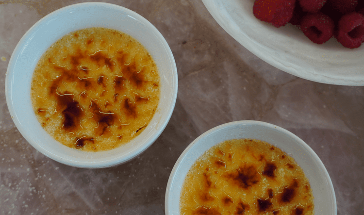

Odin Recipes - Crème Brûlée

The Beauty of Crème Brûlée
Despite the common misconception, the French delicacy known as Crème Brûléee is not
hard to make at all. It is really a simple yet unbeliveably soft and creamy desert
that will melt right in your mouth, and that can be easily made with your family
and friends.
Unlike some other dishes which may be time-consuming, Crème Brûlée is truly easy
to make, and the results are well worth the wait. You'll find a detailed ingredient
list and step-by-step instructions in the recipe below, but let's go over the basics:
The Ingredients
- 6 egg yolks
- 6 tablespoons white sugar, divided
- ½ teaspoon vanilla extract
- 2 ½ cups heavy cream
- 2 tablespoons brown sugar
Steps
- Preheat the oven to 300 degrees F (150 degrees C).
- Whisk egg yolks, 4 tablespoons white sugar, and vanilla extract in a mixing bowl
until thick and creamy; set aside.
- Pour cream into a saucepan and stir over low heat until it almost comes to a boil.
- Whisk cream into egg yolk mixture; beat until combined.
- Pour mixture into the top pan of a double boiler. Stir over simmering water until
mixture lightly coats the back of a spoon, about 3 minutes.
- Pour into a shallow heat-proof dish.
- Bake in the preheated oven until custard is set, about 30 minutes. Let cool to room
temperature, then refrigerate until chilled, at least 1 hour or overnight.
- Place dish under the broiler until sugar melts and caramelizes, about 2 minutes.
Watch carefully so as not to burn.
- Allow to cool slightly, then refrigerate until custard is set again, about 10
minutes.
- Enjoy your creation